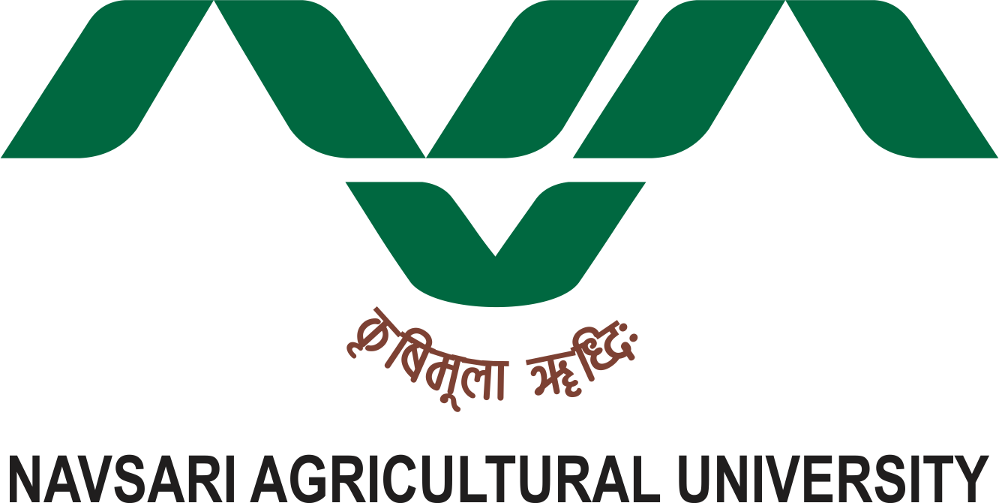
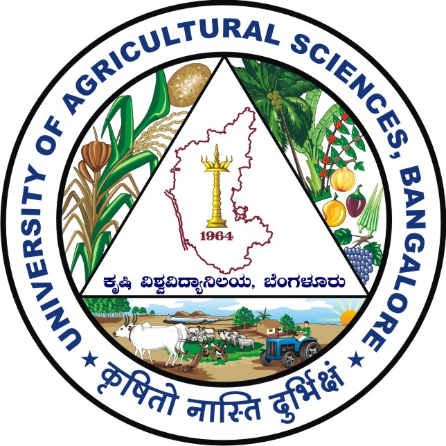

India's colleges of forestry offer excellent opportunities for those passionate about environmental conservation, wildlife management, and sustainable resource use. Institutions like the Forest Research Institute (FRI) in Dehradun and colleges under state agricultural universities provide cutting-edge education in forestry sciences, combining theoretical knowledge with practical fieldwork. With growing global attention on climate change, biodiversity conservation, and forest management, pursuing forestry in India offers not just academic growth but also diverse career options in government, NGOs, research, and international organizations working towards a greener future.
Colleges to go for,if you are pursuing Forestry as a Career Option:
| Colleges: | Link: |
|---|---|
| https://www.yspuniversity.ac.in | |
| https://fri.icfre.gov.in | |
| https://iifm.ac.in | |
| https://www.pau.edu | |
| https://www.bhu.ac | |
| https://tnau.ac.in | |
| https://kau.in/institution/college-forestry-vellanikkara | |
| https://ouat.ac.in | |
| https://nduat.org | |
|  Navsari Agricultural University, Navsari | https://nua.in |
|  University of Agricultural Sciences, Banglore | https://uasbanglore.edu.in |